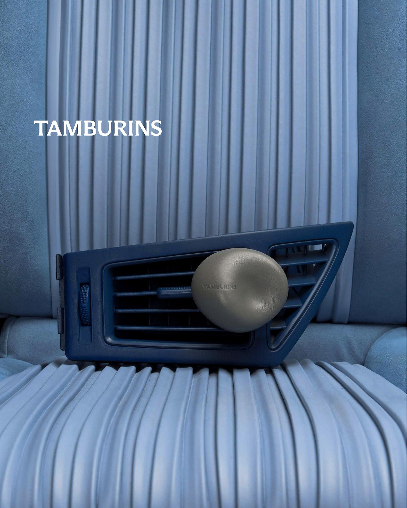
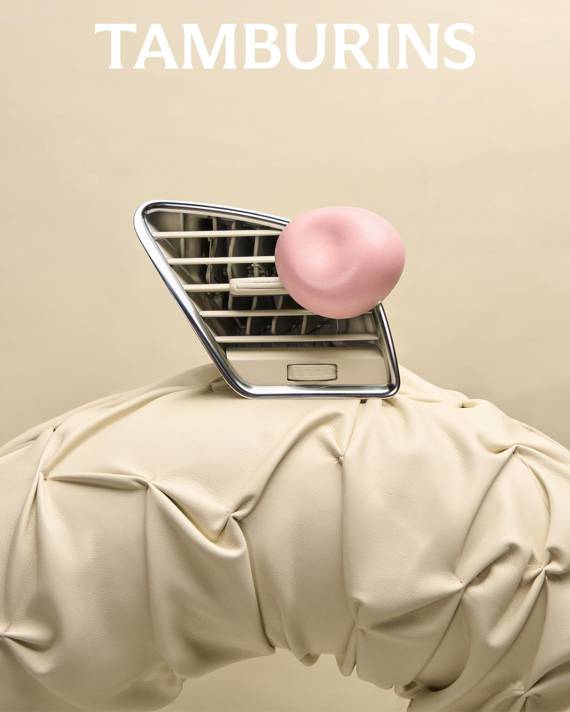
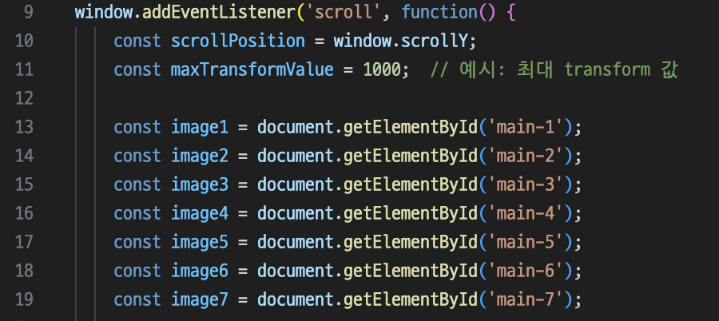
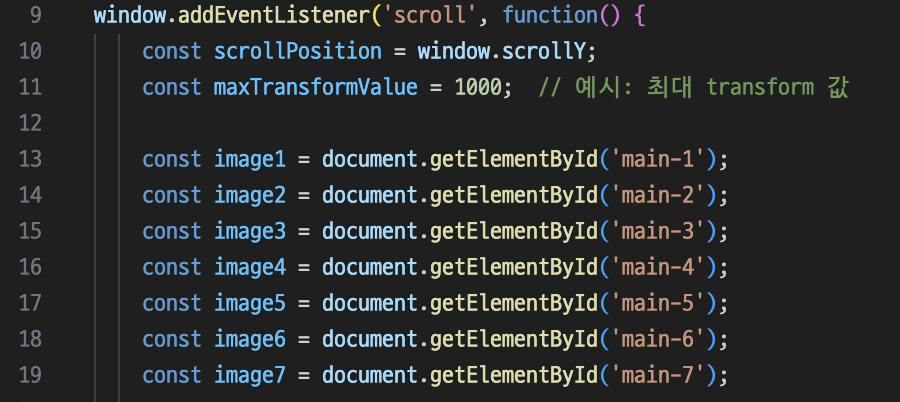

TAMBURINS
RENEWAL DESIGN
프로젝트 목표: 기존 브랜드 컨셉을 유지하면서, 탬버린즈의 신제품인 차량디퓨저 홍보를 메인으로하는 웹사이트를 제작 및 구현
기대 효과: 신선하고 혁신적인 디자인을 통해 사용자 경험을 향상시키고자 함
Tamburins Website
사용자는 메인 페이지에서 정보를 찾거나
브랜드의 독특한 매력을 경험하기 어려움
단조로움
동적 요소 없음
시각적 요소 부족
정보 부족
Renewal Direction
브랜드 컨셉을 반영한 애니메이션으로 웹사이트를 보다
현대적이고 매력적으로 만들어 사용자 경험을 향상시키는 데 중점을 둠
동적 요소
시각적 효과
정보 제공
몰입감
효과적인 인터랙션
Style Guide
01. DESIGN KEYWORDS


- CLASSIC
- SIMPLE
- SOFT
- #클래식
- #깔끔한
- #부드러움
02. COLOR PALETTE
Black & White를 중점적으로 사용하여 깔끔하고 모던한 느낌을 연출하였으며,
파스텔톤의 파랑 계열과 아이보리 계열의 이미지를 주로 사용하여, 클래식과 부드러운 느낌을 이어가고자 하였습니다.
Modern
#000000
Classic
#6582AA
Simple
#FFFFFF
Soft
#F8E7C8
03. TYPOGRAPHY
메인 폰트는 한/영 Pretendard를 사용하였으며, Playfair Display serif체를 사용해 클래식한 무드를 나타내었습니다.

 Publishing Problem & Solution
Publishing Problem & Solution
스크롤이 왜 계속 생기는거죠??
Ploblem
첫 메인 화면에서 스크롤시 이미지가 분산되는 transform 애니메이션을 추가하면서 해당 영역에 overflow: hidden을 주었음.
스크롤시 이미지가 지속적으로 움직이고 있었기 때문에 페이지가 끝나도 무한 스크롤이 발생하는 문제 발생
스크롤시 이미지가 지속적으로 움직이고 있었기 때문에 페이지가 끝나도 무한 스크롤이 발생하는 문제 발생
Solution
Overflow: hidden을 주었기 때문에 이미지가 보이지 않아 다른 영역에서 문제가 발생한것으로 판단해, 문제를 파악하는데에 있어 시간을 소비하였음
해당 영역의 transform 최대값을 1000으로 제한, CSS overflow: hidden을 지우고, body에 overflow-x: hidden을 주어 해결 
해당 영역의 transform 최대값을 1000으로 제한, CSS overflow: hidden을 지우고, body에 overflow-x: hidden을 주어 해결 
왜 자연스러운 확대가 안되는거죠?
Ploblem
스크롤에 따라서 이미지가 회전하는 동시에 점진적으로 Zoomin 되는 효과를 구상하였으나, 고정된 위치에서의 부드럽고 자연스러운 확대모션이 구현 되지 않음.
transform 속성을 부분적으로 사용하고, 요소의 중심점을 지정하지 않아 생기는 이슈로 파악 (‘transform’ 속성으로 회전, ‘width’ 속성으로 확대)
transform 속성을 부분적으로 사용하고, 요소의 중심점을 지정하지 않아 생기는 이슈로 파악 (‘transform’ 속성으로 회전, ‘width’ 속성으로 확대)
Solution
‘transform’ 의 rotate, scale 속성을 사용하여 회전과 확대를 동시처리하여 자연스러운 동작을 구현하였으며,
translate(-50%, -50%)으로 이미지를 중심점 기준으로 이동시켜, 변환 효과가 이미지의 중심에서 발생하도록 수정하였음
translate(-50%, -50%)으로 이미지를 중심점 기준으로 이동시켜, 변환 효과가 이미지의 중심에서 발생하도록 수정하였음